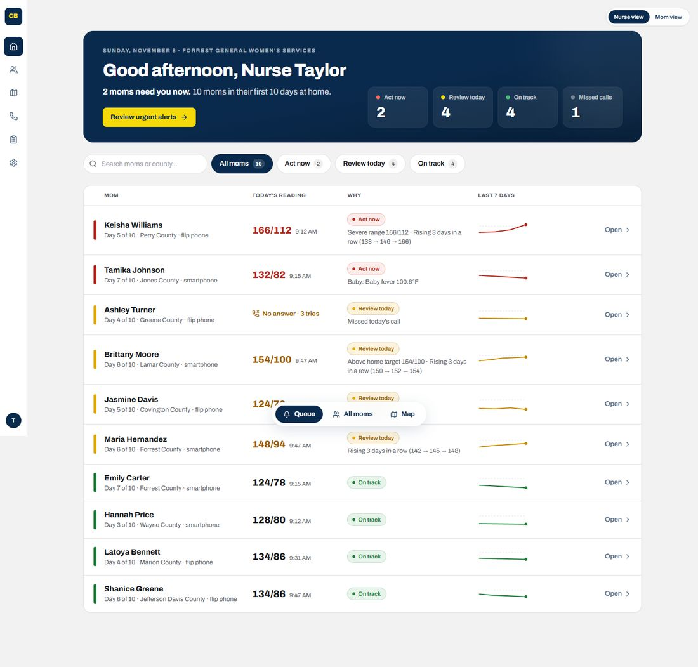
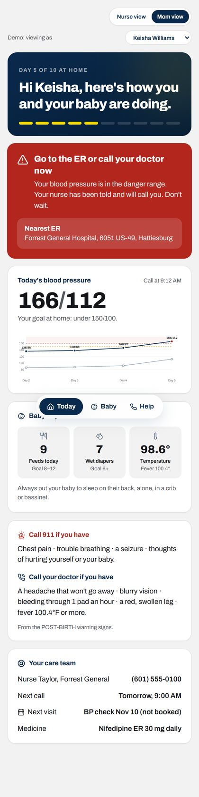
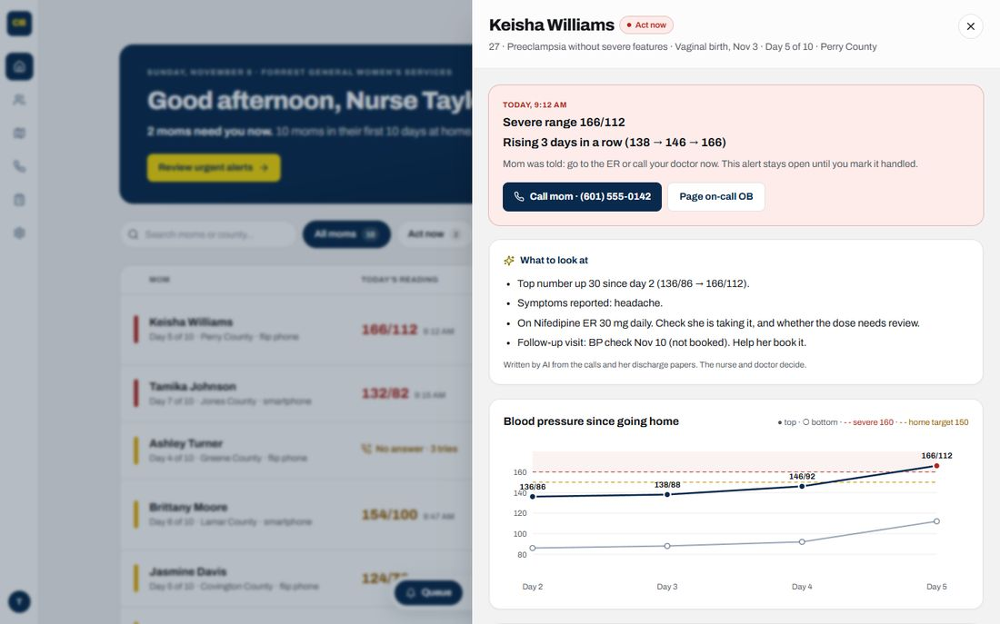

From pregnancy to one year after birth, in Mississippi. Every number and rule here comes from a published source, listed at the bottom. Flip the switch on the map to see where our product steps in.
Built from the SMFM checklist, AIM bundle, POST-BIRTH, and real hospital call scripts.
Same medical rules. The AI does the listening, reading and writing. People make every medical decision.
Honest status: a logical guess. Nurses normally record patient calls, but we found no source on how these follow-up calls are recorded today or how long it takes. Ask the nurse: "After a follow-up call, what do you write down, and where?"
Honest status: proven that the AIM high blood pressure safety bundle has a required "Reporting" part, and that Blue Cross Blue Shield of Mississippi reviews hospitals on these bundles every quarter. NOT proven: which exact numbers hospitals report, or how much work it is. Ask the nurse: "What do you report for the blood pressure safety program, and who puts it together?"
Six parts. Two are built as a working first version, in the same look as LGS Bid Intelligence: navy and gold on a soft gray background. The rest is the plan.



Days 2–4: most moms go home. Blood pressure has usually dropped in the first 48 hours.
Days 3–6: blood pressure rises again. In one study, the first severe reading came at a median of day 6.
Days 7–10: the standard blood pressure check for non-severe moms. Severe or on medicine: within 72 hours. AIM bundle: within 3 days.
Sources: SMFM checklist, MSPQC toolkit, ACOG PB 222
Source: AWHONN POST-BIRTH handout (2023)
Source: AAP symptom checker, AAP fever
Source: AAP, AAP safe sleep
Hospitals that make the call use a script like this. A nurse makes it once, 48–72 hours after discharge. CareBridge asks the same questions every day, by voice.
Source: Wisconsin Association for Perinatal Care script. Also: Washington DOH, Mount Sinai study. Mississippi's own call script is in the MSPQC toolkit; we have not read it yet.
Sources: MS Medicaid rule, HHS billing guide, MS RHTP
ACOG Committee Opinion 767 (treat severe blood pressure in 30–60 minutes) was withdrawn. Cite ACOG Practice Bulletin 222 instead, which has the same rule.